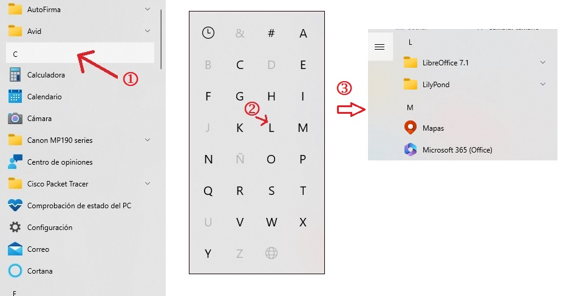

Características de Windows
Escritorio
Abarca la pantalla del monitor. Contiene iconos para acceder fácilmente a los programas, carpetas o archivos.

Botón Inicio
Nos permite acceder a la configuración, a las aplicaciones, al Inicio/apagado, etc. El menú Inicio también se abre al pulsar la tecla Windows 
Al pulsar el botón Inicio se muestra el menú Inicio:
En la parte izquierda del menú Inicio aparece una lista con las aplicaciones que tenemos instaladas, ya sean del propio sistema operativo o que hayamos instalado nosotros.
En la parte superior, se distinguen las más usadas y las agregadas recientemente.
Más abajo se muestran todas las aplicaciones ordenadas por orden alfabético. Cuando el número de aplicaciones es elevado, podemos pulsar en cualquier letra que encabeza la lista de aplicaciones que empiezan por dicha letra y nos aparecerá un alfabeto. Haciendo clic en una letra de dicho alfabeto, nos situaremos exactamente en la lista de programas que comienzan por ella.

También vemos cinco opciones que son fijas dentro del menú Inicio: Inicio/Apagado, Configuración, Imágenes, Documentos y el usuario que ha iniciado sesión.
En la zona de la derecha, se muestran las "Live tiles" o tarjetas animadas. Haciendo clic con el botón derecho de una tile se nos mostrarán las diferentes acciones que podemos realizar sobre ella: desanclar de Inicio, cambiar el tamaño, desactivar la animación, etc.
También podemos arrastrar una tile y situarla en un grupo diferente. Para añadir una tile, tan solo hay que pulsar con el botón derecho en cualquier elemento de la lista de la izquierda y elegir Anclar a Inicio.
Barra de tareas
Es la barra que se encuentra en la parte inferior de la pantalla. Contiene accesos rápidos a algunas aplicaciones. También permite gestionar y  alternar entre las ventanas que tenemos abiertas, ya que cada una de ellas tendrá asociado un icono en la barra de tareas. 
Otros elementos que podemos encontrar son: fecha y hora, icono de conexión de red, icono del antivirus, icono de la batería (si se trata de un portátil), etc., pudiendo variar de un ordenador a otro dependiendo de los programas que estén instalados. Si pulsamos en la flecha hacia arriba que se encuentra junto a estos iconos, se mostrarán los iconos de programas que se inician al encender el ordenador.
Podemos personalizar la barra de tareas de muchas maneras: cambiar el color y el tamaño, anclar las aplicaciones favoritas, moverla por la pantalla, etc. Al pulsar sobre ella con el botón derecho del ratón, aparece un menú con diferentes opciones como, por ejemplo, Configuración de la barra de tareas o Mostrar el escritorio, esta última minimiza todas las ventanas abiertas para visualizar el escritorio.
Barra de búsqueda
 Es una herramienta muy útil para localizar un programa y ejecutarlo. Conforme vayamos escribiendo el nombre del programa a buscar, nos irá ofreciendo posibles resultados.
Área de notificaciones
Se encuentra en la parte derecha de la barra de tareas . Muestra mensajes del sistema.
Iconos de acceso directo
Son iconos que nos permiten acceder más rápidamente a archivos, carpetas o programas. Al borrar un icono de acceso directo, el archivo, carpeta o programa asociado no se borra.  Los iconos de acceso directo se caracterizan por tener una pequeña flecha de color azul en la esquina inferior izquierda.
Explorador de archivos
Nos permite gestionar fácilmente nuestros archivos y carpetas, con la posibilidad de tener a mano aquellos a los cuales accedemos con más frecuencia. 
- La pestaña “Inicio”, ubicada en la esquina superior izquierda, contiene herramientas relacionadas con los archivos: copiar, pegar, seleccionar y eliminar, entre muchas otras.
- “Compartir”. Se selecciona el archivo que deseamos compartir y pulsamos sobre el icono de compartir. También tenemos disponibles opciones para grabar los archivos en un disco óptico, imprimirlos o enviarlos por fax, entre otros. Para poder usar el sistema de almacenamiento en la nube OneDrive, integrado en el explorador, debemos iniciar sesión con una cuenta de Microsoft.
- Comprimir: comprime los archivos seleccionados y genera con ellos una carpeta zip en el mismo directorio.
Botón “Vista de Tareas”
Sirve para ver todas las aplicaciones, carpetas, escritorios y archivos que tenemos abiertos en ese momento. También es posible ejecutarlos desde aquí y gestionar la característica de escritorios múltiples.
Papelera de reciclaje
Almacena los archivos, carpetas o accesos directos eliminados desde el disco duro o desde discos duros externos que tengamos conectados, pero no desde memorias USB (pendrives). Es un paso intermedio antes del borrado definitivo, así, si nos hemos equivocado al borrar un elemento, podemos recuperarlo desde la papelera de reciclaje, volviendo el elemento a la ubicación donde se encontraba antes de borrarlo.
En el escritorio suele mostrarse un icono de la Papelera de Reciclaje, aunque, como veremos más adelante, es posible configurar esta opción. Al hacer clic con el botón derecho del ratón sobre dicho icono, se muestra un menú contextual donde se nos ofrece la posibilidad de realizar diferentes acciones como, por ejemplo, Vaciar la papelera de reciclaje.
La Papelera de Reciclaje es una carpeta especial de Windows. Cada disco tiene una carpeta oculta $RECYCLE.BIN que contiene los archivos que se eliminan en esa unidad. Al abrir la Papelera de Reciclaje, se muestran los elementos de todas las carpetas $RECYCLE.BIN de todos los discos conectados en nuestro sistema. Es importante señalar que si borramos un archivo de un disco externo y a continuación desconectamos el disco, el archivo borrado aparecerá en la Papelera de Reciclaje, pero solo mientras no actualicemos esta. No podremos eliminar ni restaurar el archivo de la Papelera de Reciclaje hasta que no conectemos de nuevo el disco duro externo.
Al hacer clic con el botón derecho sobre el icono de la Papelera de Reciclaje y luego en Propiedades, podemos ver las unidades de disco que Windows incluirá en la papelera.
Snap Assist
Es una herramienta muy útil para comparar datos entre ventanas. Nos permite tener a la vez hasta 4 ventanas compartiendo la misma pantalla. 
Para ajustar una ventana, hay que hacer clic sobre ella y arrastrarla hacia un margen de la pantalla. Si queda algún hueco sin rellenar, se mostrarán en miniaturas las posibles ventanas que pueden ocuparlo. Tan solo hay que hacer clic en una de ella para que pase a ocupar dicho hueco.
Enlace Móvil
Esta aplicación nos permite conectar el móvil con el ordenador y asíacceder de forma rápida a contenidos como fotos y mensajes de texto del móvil (Android). También permite escribir SMS y gestionar las llamadas desde el PC. Para conectar ambos dispositivos será necesario instalar en el móvil la aplicación Enlace Windows. Mediante un código QR se realizará la conexión.
Línea de tiempo
Se utiliza para encontrar más fácilmente correos electrónicos, documentos o carpetas que hemos abierto anteriormente. El sistema nos muestra, ordenados cronológicamente, los acciones que hemos realizado. Por ejemplo, si estamos escribiendo en un procesador de textos un documento y no nos da tiempo a terminarlo ese día, al día siguiente podemos ir a la línea de tiempo y continuar editándolo.
Recorte y anotación
Es una herramienta para hacer captura de pantalla y anotaciones sobre esa captura. Podemos acceder a ella desde el menú Inicio o bien con Windows + MAYUSC + S. El recorte se guarda en el portapales, con CRTL+V podemos pegarlo en una aplicación, como Fotos o Paint.
Portapapeles en la nube
Esta característica de Windows permite que se pueda sincronizar en la nube el contenido del portapapeles  de un ordenador para pegarlo en otro ordenador. Para activarla, hay que hacer clic en Configuración de Windows, después Sistema y luego Portapapeles y activar la casilla "Sincronizar entre dispositivos". 
En esta misma sección también podemos activar el historial del portapapeles. Esto nos permitirá copiar varios elementos en el portapapeles. Luego, al pulsar Windows + V, nos aparece una ventana con los elementos guardados donde deberemos pulsar en el que queramos pegar. 

La Asistencia rápida
Permite a dos personas compartir un equipo mediante una conexión remota, de manera que una de las personas puede ayudar a resolver problemas en el equipo de la otra. Para ello, en el cuadro buscar escribimos "asistencia técnica" y pulsamos en la aplicación. Después de iniciar sesión, se generará un código que tendremos que compartir con la otra persona.
Seguridad
Windows trae incorporado su propio antivirus, Microsoft Defender. También incluye un Firewall y muchas otras herramientas de seguridad.
Teclado en pantalla
Accesible en Inicio > Todas las aplicaciones > Accesibilidad de Windows >Teclado en pantalla. El teclado se puede utilizar de forma táctil o no. Es útil cuando se nos rompe el teclado físico o no disponemos de él. 
Cortana
Es el asistente personal basado en la nube. Es necesario iniciar sesión con una cuenta de Microsoft y conceder permisos para que Cortana pueda acceder a la información del equipo.
Navegador
Windows incluye el navegador Edge. Algunas herramientas interesantes, accesibles en Edge desde el menú de los tres puntos, son: 
-
Solucionario matemático (Microsoft Math Solver). Tiene un amplio abanico de utilidades con las que, gracias a su Inteligencia Artificial, podremos aprender matemáticas, mejorar nuestros conocimientos o resolver un problema. 
-
Rendimiento. se puede activar este modo para reducir el consumo de ancho de banda y CPU.
-
Leer en voz alta: “CTRL + Mayús + U”. Una vez está activada, el navegador empezará a leer las palabras de la página web que tengamos abierta. En la herramienta se puede configurar su velocidad, pausar la lectura o cambiar incluso la voz en función del idioma que queramos que lea.
-
Colecciones: consiste en guardar contenido de internet de forma gráfica y organizada. 
Algunos trucos:
- Grabar pantalla sin necesidad de programas adicionales, gracias a la barra de xbox que incorpora Windows. Pulsar Window+G. Windows+alt +R, empieza a grabar de inmediato (si no tenemos desactivadas ciertas características de xbox).
- Emojis: "Windows + ;" o "Windows +.". En la segunda pesta√±a tenemos los kaomojis.¬†üëå